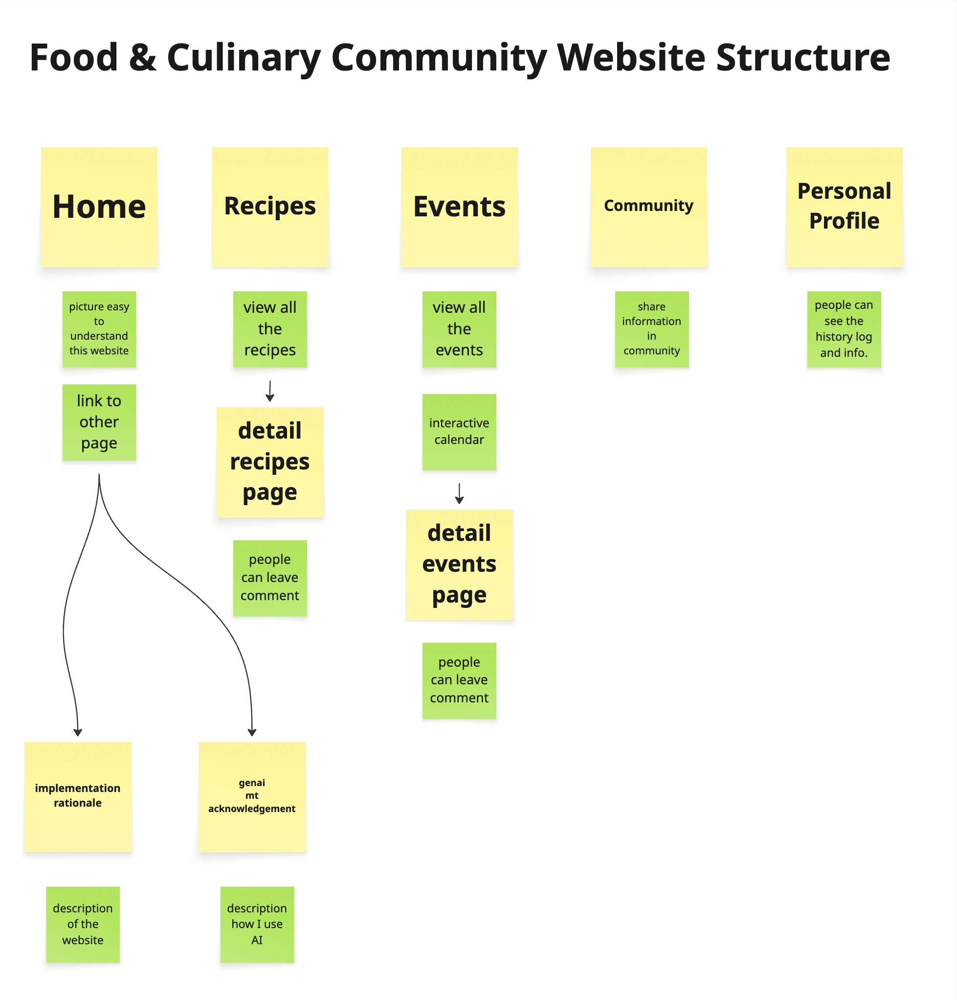

Implementation Rationale – Key Highlights
This summary highlights the key design and development decisions made for the Food & Culinary Community website in Work Phase 4.
1. Project Overview
The project aimed to create a community-driven website for sharing recipes, exploring food-related events, and connecting with local cooks. The focus was on building a friendly and inclusive platform.
- Home Page: Showing the appliction of UI components, including hover effects on cards and buttons. And navigation to other pages.
- Recipes: Displays a grid of recipe cards with images, titles, and brief descriptions.
- Events: Features an interactive calendar highlighting event dates.
- Community: Provides a forum-like structure for user interaction.
- Profile: Allows users to view their personal information.
2. Completed and In-Progress Pages
- Home Page: All links and UI elements have been fully completed.
- Recipes: Most elements and links are completed, except for the search function, which will be developed in future updates.
- Events: The main event page and calendar functions are completed. The event detail pages currently include static content and a basic comment feature using local storage. Related links and advanced interactive features will be added later.
- Community: A structural framework has been created. Interactive components such as posting, replying, and reacting are planned for future development.
- Profile Page: The current version only supports the View function. Additional links and interactive options will be implemented in future iterations.
3. Client & User Alignment
- Client Goal: Build an inclusive digital hub celebrating cultural diversity through cuisine.
- User Needs: Share recipes, explore events, and engage with local cooks.
- Result: Responsive layout,comment features, reusable components, and an interactive events calendar.
4. Design & Development
- Applied mobile-first responsive design using CSS Grid.
- Created consistent visuals with style tokens for color, spacing, and shadow.
- Added interactive events calendar showing currents date and the events date by marks.
- Implemented a comment features, enabling users to leave comments in recipes and events pages.
5. Accessibility & Ethics
The website follows fundamental accessibility principles by using semantic HTML elements, descriptive ARIA labels, and clear keyboard navigation paths. Text and background colors were carefully chosen to ensure sufficient contrast for readability. Basic accessibility checks were conducted through manual inspection and the Lighthouse tool.
In terms of ethics, all images were sourced from royalty-free platforms and properly credited when required. The project does not collect or store personal user data; instead, temporary information such as comments is stored locally using local storage rather than through an online database or API, to maintain user privacy and align with ethical data practices.
6. Challenges & Solutions
- Comment Functionality: The main challenge was implementing an interactive comment system directly within the same event page rather than on a separate one. To solve this, I applied JavaScript techniques learned during the Work Phase3, using form submission and dynamic DOM updates to post and display comments without reloading the page.
- Integration & Testing: Since I have not yet learned how to build APIs, I replaced API requests with local storage to ensure that comment sections work consistently across different pages.
7. Testing & Deployment
Tested on major browsers and devices.
Accessibility reports
verified compliance. Deployed on
UQCloud and source hosted on GitHub with
consistent commits.